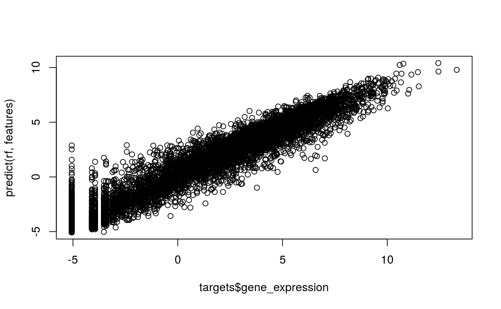
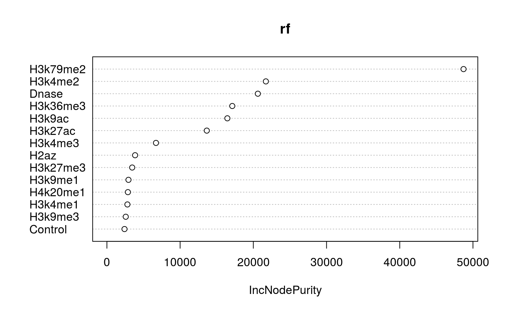

Abstract
Description of your vignette
Getting started
To enable the Bioconductor style in your R Markdown vignette you need to include the following in the DESCRIPTION file:
VignetteBuilder: knitr
Suggests: BiocStyle, knitr, rmarkdownStyle macros
BiocStyle introduces the following macros for referring to R packages:
- IRanges, for Bioconductor software, annotation and experiment data packages,
- data.table, for R packages available on CRAN,
- rmarkdown, for R packages available on GitHub,
- MyPkg, for R packages that are not available on Bioconductor, CRAN or GitHub.
Figures
Assign captions to figures in the code chunk option fig.cap to automatically number them, and to be able to reference them, see Figure @ref(fig:plot). The figure label is generated from the code chunk label by prefixing it with fig:.
Regular figure. The first sentence of the figure caption is automatically emphasized to serve as figure title.
Small and wide figures can be specified by fig.small and fig.wide code chunk options.

Small figure. A plot produced by a code chunk with option fig.small = TRUE.
Wide figure. A plot produced by a code chunk with option fig.wide = TRUE.
Equations
To number and reference equations, put them in equation environments and assign labels to them, see Equation @ref(eq:binom).
\[\begin{equation} f\left(k\right) = \binom{n}{k} p^k\left(1-p\right)^{n-k} (\#eq:binom) \end{equation}\]Tables
Like figures, tables with captions will also be numbered and can be referenced, see Table @ref(tab:table).
| Fruit | Price |
|---|---|
| bananas | 1.2 |
| apples | 1.0 |
| oranges | 2.5 |
Cross-references
Apart from referencing figures (Section @ref(figures)), tables (Section @ref(tables)), and equations (Section @ref(equations)), you can also use the same syntax to refer to sections by their default labels generated by pandoc.
Side notes
Footnotes are displayed as side notes on the right margin1, which has the advantage that they appear close to the place where they are defined.
some thoughts
library(ProjectAsPkg)
library(randomForest)## randomForest 4.6-14## Type rfNews() to see new features/changes/bug fixes.features = get_features()
targets = get_targets()
rf = randomForest(features, as.numeric(targets$gene_expression), ntree=10)plot(targets$gene_expression, predict(rf, features))
print(varImpPlot(rf))
## IncNodePurity
## Control 2401.999
## Dnase 20615.884
## H2az 3850.427
## H3k27ac 13641.846
## H3k27me3 3453.441
## H3k36me3 17122.410
## H3k4me1 2800.139
## H3k4me2 21710.998
## H3k4me3 6703.127
## H3k79me2 48711.869
## H3k9ac 16451.232
## H3k9me1 2944.674
## H3k9me3 2573.372
## H4k20me1 2867.282Session info
## R version 3.5.0 (2018-04-23)
## Platform: x86_64-pc-linux-gnu (64-bit)
## Running under: Ubuntu 16.04.4 LTS
##
## Matrix products: default
## BLAS: /usr/local/lib/R/lib/libRblas.so
## LAPACK: /usr/local/lib/R/lib/libRlapack.so
##
## locale:
## [1] LC_CTYPE=en_US.UTF-8 LC_NUMERIC=C
## [3] LC_TIME=en_US.UTF-8 LC_COLLATE=en_US.UTF-8
## [5] LC_MONETARY=en_US.UTF-8 LC_MESSAGES=en_US.UTF-8
## [7] LC_PAPER=en_US.UTF-8 LC_NAME=C
## [9] LC_ADDRESS=C LC_TELEPHONE=C
## [11] LC_MEASUREMENT=en_US.UTF-8 LC_IDENTIFICATION=C
##
## attached base packages:
## [1] stats graphics grDevices utils datasets methods base
##
## other attached packages:
## [1] randomForest_4.6-14 ProjectAsPkg_0.1.0 BiocStyle_2.8.0
##
## loaded via a namespace (and not attached):
## [1] Rcpp_0.12.16 rstudioapi_0.7 knitr_1.20 xml2_1.2.0
## [5] magrittr_1.5 roxygen2_6.1.0 MASS_7.3-50 R6_2.2.2
## [9] rlang_0.2.0 highr_0.6 stringr_1.3.1 tools_3.5.0
## [13] xfun_0.1 htmltools_0.3.6 commonmark_1.6 yaml_2.1.19
## [17] rprojroot_1.3-2 digest_0.6.15 assertthat_0.2.0 bookdown_0.7
## [21] pkgdown_1.1.0 crayon_1.3.4 fs_1.2.6 memoise_1.1.0
## [25] evaluate_0.10.1 rmarkdown_1.9 stringi_1.2.2 compiler_3.5.0
## [29] desc_1.2.0 backports_1.1.2this is a side note entered as a footnote↩